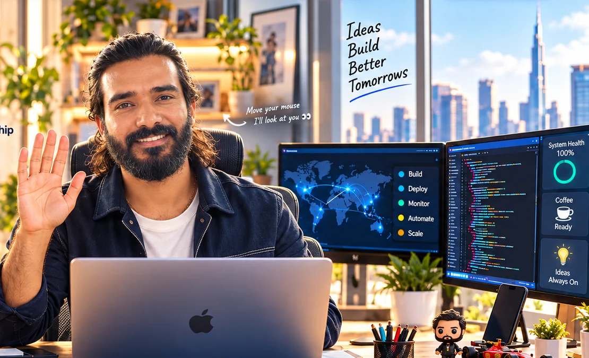

Customer Success Manager · Raw Engineering
Production operations, reporting automation, incident alerting and cross-functional coordination.
I connect people, platforms and automation to create reliable digital experiences and improve how complex operations run.
7+ years experience · India · Open to opportunities

My professional experience covers technical support, customer success, incident management, operational automation and cross-functional coordination.
Technical support and operational leadership experience.
Incident response, monitoring and stakeholder communication.
Improving reporting and alerting workflows using APIs and Apps Script.
Production operations, reporting automation, incident alerting and cross-functional coordination.
Support workflow improvements, issue escalation and team training.
Technical troubleshooting and collaboration with product teams.
Incident monitoring, response and communication for digital platforms.
Try incident lab ↗Google Apps Script, API integrations and structured Slack alert workflows.
Explore response workflow ↗Shared ownership, stakeholder coordination and operational improvement.
Discuss my experience ↗Google Apps Script · REST APIs · Webhooks · Incident management · SLA governance · Reporting · Team coordination · Stakeholder communication
Illustrative incident scenario using synthetic, fictional metrics; no client data is shown.
Monitoring active. Trigger a simulated incident.
The résumé download will be added after the binary PDF is committed. Until then, contact me for a copy.
Request résumé ↗Interested in technical operations, automation, reliability or leadership? I'd be glad to talk.